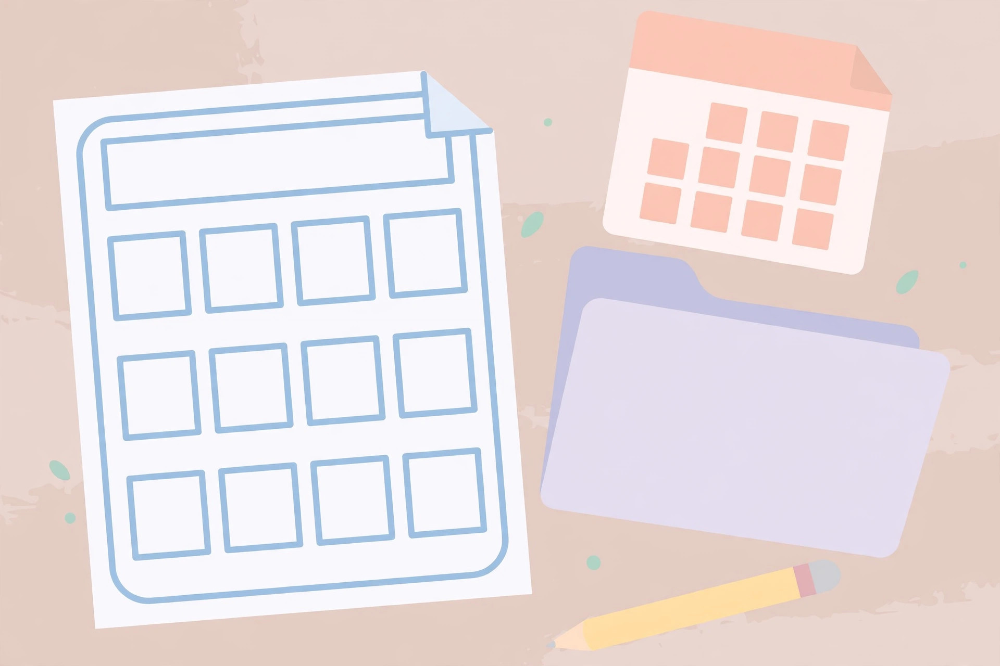

A teen's first tax return and T4 basics in Canada

A first job produces two kinds of paperwork. Pay stubs arrive all year, and then, early in the next year, a single summary slip arrives that pulls the whole year together: the T4. The tax return is the form that turns that slip into a settled account with the Canada Revenue Agency (CRA) — a refund if too much tax was withheld, a balance if too little was, and, just as importantly for a teenager, a set of records that quietly pay off in later years. This guide explains what a T4 shows, why filing matters even when income is small, and how to file a first return step by step, using CRA guidance checked on October 17, 2026.
General information only — this article is not financial or tax advice. Tax rules change and personal situations differ; for specific questions, talk to a qualified tax professional or contact the CRA directly.
Why file at all when income is small?
The CRA's own guidance is broader than most teens expect. A return is used to claim a refund, and the CRA also says that even a person who had no income in the year still has to file a return to get the benefits, credits, and refund they may be entitled to. Filing is also how a person begins or continues receiving the GST/HST credit and related provincial and territorial credits. In other words, the return is not only a tax bill calculation. It is the registration form for several payment systems that run on tax data, and skipping it does not pause those systems — it simply leaves the teen out of them.
The CRA makes the same point directly to students: even with little or no income, a student should still file to claim eligible credits and benefits. For a teen with a part-time job, there is a second, simpler reason. Tax was likely withheld from pay during the year based on estimates. The return is the only mechanism that compares the estimate with the actual annual income and releases the difference as a refund. No return, no settlement — the withheld amount simply stays unclaimed until a return is filed.
What a T4 is, and when it arrives
A T4 slip is a statement of the employment earnings paid to an employee and the deductions taken during the year. The employer prepares one for each employee, sends a copy to the CRA, and provides the employee's copy before the last day of February following the year the income was earned. A teen who worked two part-time jobs in one year receives two T4s, one from each employer, and every T4 must be included on the return. That matters because the CRA receives copies directly from employers, so a missing slip is not invisible — it is a mismatch waiting to be noticed.
A T4 is not the same as a pay stub, and the difference is worth stating plainly. A stub covers one pay period. The T4 covers the full calendar year, January to December, no matter when the job started or ended. A teen who started work in November will still get a T4 for that short first year, and that short year still counts for the carry-forward records described below.
Reading a T4 box by box
A T4 carries many numbered boxes, but a teen's first slip usually has only a handful filled in. These are the ones to check first, in this order:
| Box | What it shows | What to check |
|---|---|---|
| 14 — Employment income | Total gross employment income for the year, before deductions | Roughly matches the year-to-date gross pay on the final pay stub of the year |
| 22 — Income tax deducted | Total income tax the employer withheld and sent to the CRA during the year | This is an estimate paid in advance; the return settles whether it was too much or too little |
| 16 — CPP contributions | Employee Canada Pension Plan contributions (box 17 is the Quebec Pension Plan equivalent) | Expect $0 for most of the year before age 18; CPP starts after the 18th birthday under the payroll rules covered in the pay stub guide on this site |
| 18 — EI premiums | Employee Employment Insurance premiums | Present at any age; EI has no age limit |
| 24 — EI insurable earnings | The earnings on which EI premiums were calculated | Usually close to box 14 at teen income levels |
| 26 — CPP/QPP pensionable earnings | The earnings on which pension contributions were calculated | Can differ from box 14 when exemptions apply |
Two habits make the box check painless. First, keep the final pay stub of the year beside the T4: the stub's year-to-date totals and the T4's boxes were built from the same payroll records, so a large unexplained difference is a reason to ask the employer's payroll contact a polite question before filing. Second, treat box 22 with calm. A teen who sees a large amount of tax deducted has not necessarily overpaid, and a teen who sees zero deducted has not necessarily escaped tax. Only the completed return, which looks at total income and credits together, can say which way the settlement falls.
The three future payoffs of filing early
The refund argument convinces most teens for one year. The stronger argument is cumulative: each filed return builds records that later years depend on. Three of them matter most.
1. The GST/HST credit starts at 19 — if the return exists. The GST/HST credit is paid four times a year to eligible people with low and modest incomes. To start receiving it soon after turning 19, the CRA requires the previous year's tax return to be filed — even if there was no income to report. The CRA then determines eligibility automatically from that return, and the first payment arrives on the payment date that comes after the 19th birthday. A teen who files at 16, 17, and 18 as a routine has nothing extra to do at 19. A teen who never filed has to start the habit at exactly the moment the credit becomes available, and late filing delays the first payment.
2. Tuition amounts can be carried forward — but only if they are reported. A student who pays eligible tuition receives a certificate (a T2202 in Canada) and reports the amount on Schedule 11 of the return; the federal tuition amount is claimed on line 32300, and federal non-refundable credits are calculated at the lowest personal tax rate, currently 15 percent. A non-refundable credit only helps when there is tax to reduce, and a student working part-time may have little or none. The unused amount is not lost: Schedule 11 handles the transfer or carry-forward of unused amounts, so the balance can be carried forward to a future year when income — and tax — is higher, or, within limits and under the schedule's rules, a current-year amount can be transferred to an eligible person such as a parent or grandparent. The catch is procedural and absolute: the tuition must be reported on a filed return for the carry-forward record to exist. The notice of assessment issued after filing is the document that shows unused amounts carried forward, which is why that notice should be kept, not skimmed and discarded.
3. Reported earnings build RRSP room for later. At a general level, the CRA notes that RRSP deduction limits for a future year may be increased based on qualifying income reported on the current year's return, and that filing with no tax payable still allows tuition amounts to be reported for carry-forward or transfer. A teen does not need to open an RRSP or contribute anything for this to matter. The point is simpler: employment income that is reported on a filed return becomes part of the record from which future contribution room is calculated, while unreported years build nothing. Filing is the act that banks the room; deciding what to do with that room is an adult decision that can wait years.
Decide how to file: a short decision framework
A first teen return is usually simple — one or two T4s, perhaps a tuition certificate later — so the real decision is about help, not software features. Work through three questions. First, is the situation genuinely simple: employment income only, no self-employment, no investments beyond a savings account? If yes, a free route will almost certainly do. Second, does the teen want to learn the process or just get it filed? Learning argues for preparing the return together with a parent using certified software; getting it filed argues for a clinic. Third, is anything unusual present — income from another country, a business, or a slip that looks wrong? Unusual items argue for professional help or a direct question to the CRA before filing. The CRA lists certified software for NETFILE, including free options for simple tax situations, and notes that Auto-fill my return, available in certain certified software, requires full registration for CRA My Account — something a first-time filer typically sets up after the first return rather than before it. For modest income and a simple situation, volunteers through the Community Volunteer Income Tax Program (CVITP) can prepare and file the return for free; those clinics usually run from February to the end of April.
A teen's first filing, step by step
- Gather the paperwork in one folder: every T4 from every employer that year, a Social Insurance Number, and any tuition certificate if the teen attended an eligible program. Wait until after the last day of February so all T4s have had time to arrive.
- Sanity-check each T4 against the final pay stub of the year, box by box, using the table above. Ask the employer about any large mismatch before filing, not after.
- Choose the filing route using the decision framework above: certified software (checking the CRA's list for a free option), a free CVITP clinic, or professional help for anything unusual.
- Complete the return with all slips included — every T4, even from a job held for only a few weeks. Report any tuition amount on Schedule 11 even if no tax is owing, so the carry-forward record is created.
- Submit the return and keep the confirmation. Then watch for the notice of assessment, the CRA's summary of the result, and file it with the T4s — it carries the unused tuition and RRSP-related records forward.
- Put a note in the calendar for next February. Filing is an annual habit, and the second return is dramatically easier than the first.
What success looks like: every T4 for the year is accounted for, the return is submitted, a refund or a zero balance is confirmed on the notice of assessment, and that notice is stored where next year's paperwork will join it. A teen who can point to the folder and explain boxes 14 and 22 understands the system better than many adult first-time filers.
Frequently asked questions
Does a teenager legally have to file? Sometimes — for example when tax must be paid or the CRA asks for a return. But the practical answer is wider: filing is required to claim a refund and to begin or continue benefits and credits, and the CRA advises filing even with little or no income. Treat filing as the default every year a teen works.
What if a T4 never arrives? Contact the employer first — slips are due by the last day of February, so allow time for mail or portal posting. Keep pay stubs as backup records of earnings and deductions in the meantime.
Can a parent just handle it? A parent can sit beside the teen and guide every step, and for a first return that teamwork is ideal. The return itself is still the teen's, under the teen's name and Social Insurance Number — the habit being built is the teen's as much as the form is.
General information only — this article is not financial advice. For specific financial questions, talk to a qualified professional.